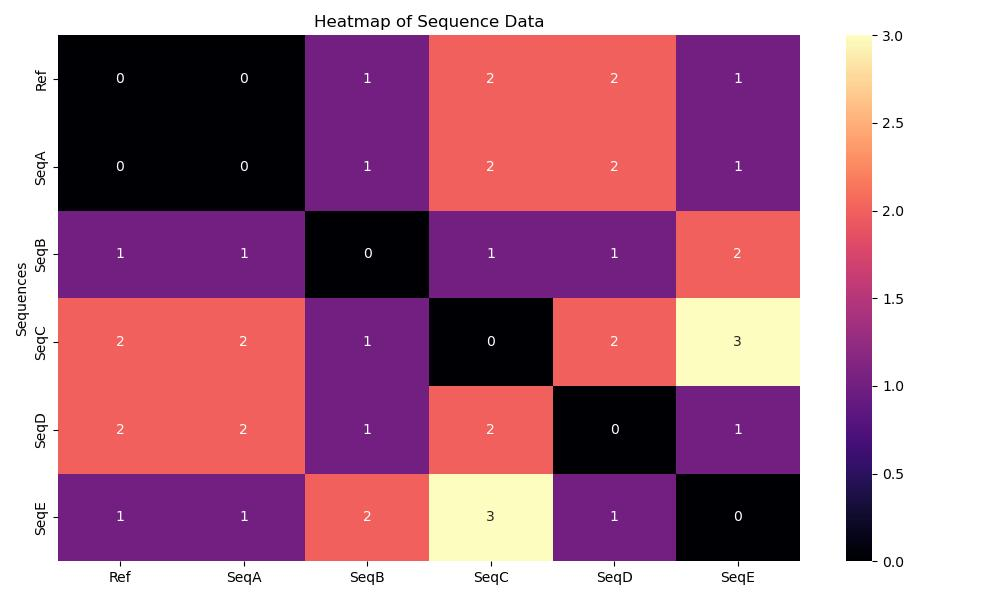
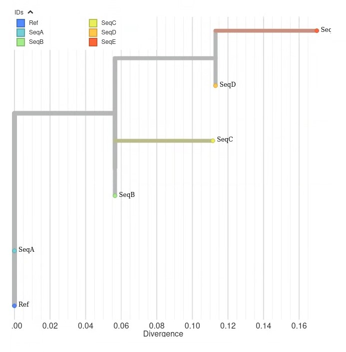

19 Understanding the Technical Concepts Underlying Genomic Analysis
⬜ Developing Hypotheses
⬜ Sample Collection
⬜ Outbreak Investigation
⬜ Sequencing
⬜ Bioinformatics
🟩 Molecular Epidemiology
⬜ Public Health Implementation
The team met to discuss what kind of genomic analyses could be performed to help visualize the sequencing data of the outbreak. While the MSA shows us exactly where genetic differences occur in the sequences, a phylogenetic tree summarizes those differences into a branching diagram that helps us trace the virus’s evolutionary history and how it may have spread from host to host. They decided to construct a pairwise distance matrix and a phylogenetic tree using the sequencing alignment. The pairwise distance matrix and phylogenetic tree are examples of two essential tools in genomic and molecular epidemiology. These analyses would allow them to determine how closely related viral genomes were, whether the outbreak originated from an animal spillover event, and how the virus was evolving over time.
Example illustating a sequence alignment

“Uhm”, raised the hand of one of the Local Health Jurisdiction Epidemiologists. “I understand alignments after looking at the sequence alignment results the Bioinformaticians generated. But I am a bit rusty when it comes to pairwise distance matries and phylogenetic trees. Perhaps one of you could explain it to me?”
“Sure thing”, exclaimed one of the Molecular Epidemiologists. Let’s start with pairwise distance matrices.
19.1 Pairwise Distance Matrices
A pairwise distance matrix is a table that quantifies the genetic differences between sequences by counting single nucleotide polymorphisms (SNPs). SNPS are individual base differences at specific nucleotide posititions in the genome. It helps to determine how closely related two samples are and whether genetic clustering aligns with known epidemiological links.
Each cell in the matrix represents the number of SNP differences between a pair of genome sequences. The smaller the number, the more similar the sequences are. A value of 0 means the sequences are identical.
Computing pairwise distance matrices is a relatively straightfoward process with several steps. First the sequence are aligned (or arranged to where the sequences line up together). In this case, each viral genome would be aligned to the reference genome to detect differences in nucleotide positions. Next, one would count the SNP differences. Each genome is compared and the number of nucleotide differences are counted. This produces a matrix where row = column (since sequence A vs B is the same as B vs A). Lastly, heatmaps can be generated from the matrices to give a visual representation using a color scheme.
Example illustrating a Pairwise Distance Matrix This pairwise distance compares the number of mutation differences between two sequences in the 19-base example sequence alignment above. For example, the number of mutation difference, also known as the genetic distance, between Sequence A and the reference sequence is 0, meaning that the sequences are identical and possess no differences in mutations. However, Sequence D has a genetic distance of 2 when compared to the reference sequence, meaning that there are 2 mutations not shared between the two sequences. As such, Sequence A is more closely related to the reference than Sequence D. In terms of tracing how the virus spreads or its transmission, it is likely that the reference and Sequence A belong to the same transmission chain than that of the reference and Sequence D.
Example illustrating a heatmap of a pairwise distance matrix

“I see now, thank you so much! That makes sense.” Smiled the Local Health Jurisdiction Epidemiologist. “Just to summarize it to myself, when I’m looking at heatmaps of pairwise distance matrices I should first pay attention to the legend, as the colors will indicate whether a sequence is identical, similar, or different. For our example heatmap, the darker colors indicate that the sequences are identical, and the lighter colors indicate disimilarity.”
“Furthermore, when reading the heatmap or pairwise distance matrix, I just follow the axes to determine what’s being compared. In our example tree on the x-axis the Ref seq is first, and on the y-axis the SeqE is first. The 1 represents that both sequences differ by 1 mutation.”
“Right on!” cheered one of the Molecular Epidemiologists.
Another Molecular Epidemiologist chimed in, “I am happy to explain phylogenetic trees!”
19.2 Phylogenetic Trees
A phylogenetic tree is a branching diagram that represents the evolutionary relationships between genome sequences. In outbreak investigations, these trees help determine:
- Whether cases cluster by lineage (groups of sequences with shared ancestry)
- If the outbreak stems from a monophyletic group, a single ancestor and all its descendants (e.g., a zoonotic spillover)
- How clades (distinct branches representing major evolutionary splits) relate to transmission patterns
In this outbreak investigation, a tree that reflects evolutionary history can help determine how closely related viral genomes are across different individuals and species. Think of it like a family tree for the virus.
Using an evolutionary tree, each tip (or leaf) represents a genome sequence from a sampled virus. The branches connecting them indicate inferred evolutionary relationships, specifically, that the sequences share common ancestors. The branch lengths typically reflect the amount of genetic change, either as a direct count of differences or as a model-based estimate that accounts for the likelihood of different types of mutations.
“Okay let me see if I can wrap my head around this”, said the Local Health Jurisdiction (LHJ) Epidemiologist.
“When we use phylogenetic trees in an outbreak, it’s like tracing the virus’ family. The trees use genome sequences, and each sequence represents a virus, even though it was taken from a human, correct?” Asked the LHJ Epidemiologist. The Molecular Epidemiologist nodded their head in agreement.
The LHJ Epidemiologist continued, “So when I’m looking at a phylogenetic tree, the branches connecting the viral sequences indicate whether they share a common ancestor and if they are related. The differences in branch lengths suggest how much change has occurred.”
“That sounds about right!” Exclaimed the Molecular Epidemiologist. “Let’s talk about interpreting trees.”
19.2.1 Interpreting Trees
19.2.1.1 Clades and Monophyletic Groups
The Molecular Epidemiologist began, “when interpreting phylogenetic trees there are a few terminology that we use: clade, monophyletic groups, lineages, and polytomies. It may sound overwhelming technical at first but think of it as how we describe the relationships we see on a tree.”
A clade is a branch of the tree that includes a common ancestor and all its descendants. If all human cases fall within a clade that also includes muubat sequences, this suggests a spillover event.
Monophyletic groups are clades where sequences share exclusive common ancestry (e.g., all sequences from a single geographic region).
Lineages are subsets of sequences with recent shared mutations, often indicating local transmission chains.
Lastly, some trees may contain polytomies. A polytomy is a branching point where more than two lineages descend from a single ancestral lineage. Often sequences that are genetically identical, located at the same horizontal position and stacked vertically on a tree may represent a polytomy.
When interpreting trees, there’s a lot to consider—but let’s keep it simple. Just like a family tree, sequences that are more closely related will share a more recent common ancestor.
- Shorter branches between tips usually mean fewer genetic differences (e.g., fewer mutations).
- Longer branches indicate a greater amount of change and more time since divergence.
- Identical sequences are shown along the same horizontal position but stacked vertically for visibility.
“Okay I think I am following along”, the LHJ Epidemiologist shook their head with a mild sense of confidence. “Can we use an example tree to demonstrate how we would interpret a tree?”
“Absolutely!” smiled the Molecular Epidemiologist.
19.2.2 Example: Interpreting a Phylogenetic Tree

“Using the example 19-base sequence alignment that we used in the pairwise distance matrix, let’s look at an example tree generated from that alignment.” Explained the Molecular Epidemiologist, pointing at the tree.
“Let’s say that this tree reconstructs the evolutionary relationships between viral sequences of Pathogen X. The first thing I want to note with using this example is that in practice, viral phylogenetics typically uses genomes thousands of bases long.”
“That makes me think that I should know the general length of the sequences that I’m working with”, the LHJ Epidemiologist thought out loud.
“You got it!” exclaimed the Molecular Epidemiologist. “I’ll explain more of this in a moment, but for now, let’s just say that there are different methods we can use to generate phylogenetic trees, but for this example we’ll use the method commonly used to evaluate mutation patterns across all sites to infer the most probable evolutionary history. This method is called Maximum Likelihood.”
The LHJ Epidemiologist’s face began to show a confused expression as they tried to follow along. “A method commonly used to evaluate mutation patterns…” they started to ponder on. The Molecular Epidemiologist noticed that they were a bit too technical, so they clarified.
“In other words, we’re using a method that asks: Given this tree, how likely is it that we’d see the mutations we actually observed? The tree that makes the observed data most likely is the one we keep.”
An idea struck the LHJ Epidemiologist as they thought out loud, “so we want a tree that offers the most likely explanation for the mutation patterns found in the aligned sequences?”
“You’re catching on fast!” cheered the Molecular Epidemiologist. “Bear with me as I try to explain the nuances of phylogenetics while using our example tree.”
FOR LAB AND EPI GURUS:
Why we trust character-based trees for outbreaks:
- Models Homoplasy Better
- Accounts for reversions (T→C→T) that distance matrices miss
- Handles Missing Data
- Still works if some genomes are 90% complete (common in outbreaks)
- Branch Support Matters
- Bootstrap values >70% = confident splits
- <50%? Treat as polytomy (like our SeqB/SeqC)
- Bootstrap values >70% = confident splits
Oftentimes trees are rooted to give direction to the branches and help orient ancestral relationship. The tree is rooted at the reference genome (Ref), which means all other sequences are interpreted relative to the ref. SeqA is genetically identical to Ref, indicated by both appearing at a divergence of 0.00. Since these two sequences are located at the same horizontal position and stacked vertically, we would say that these two sequences form a polytomy.
From that shared point,SeqB branches off next. The horizontal axis or x-axis represents divergence, which will be explained in a moment. For now, SeqB demonstrates a divergence of about 0.06 substitutions per site, suggesting it has accumulated some genetic differences since splitting from the reference.
SeqC branches off from the same internal node where SeqB is located. See how SeqC’s branch connects to the same node as SeqB without forming a clear split? This ‘flat’ connection (rather than a Y-shaped fork) is a polytomy; the tree’s way of showing uncertainty about whether SeqC is:
- A sibling of SeqB (both splitting simultaneously from their ancestor),
- A direct descendant of SeqB (but mutations are too similar to resolve the branch),
- A separate lineage that just happens to branch from the same point.
In real trees, there are different types of polytomies and they can have different meanings. Without getting into the different types, when you see polytomies on the tree it could mean that the data is too limited (e.g., short 19-base sequence) to split branches clearly, or that multiple variants diverged so rapidly that their order gets blurred.
SeqD and SeqE share a common ancestor with SeqB and SeqC, and branch from the same internal node. SeqC diverges to ~0.10 substitutions per site, and SeqD slightly further to ~0.12 substitutions per site, indicating it has acquired more mutations than SeqC.
SeqE is the most divergent sequence, branching farthest to the right at ~0.16. This suggests it has accumulated the most genetic change from the reference and may represent an early offshoot or a more distinct lineage. For this sequence, keep in mind that SeqE, like the other sequences, is 19 bases long, so a divergence of ~0.16 would mean a fair portion of this sequence is different from the reference.
The Molecular Epidemiologist paused for a moment. “This is challenging material”, they started “even experienced researchers debate tree interpretations!”
19.2.2.1 Interpretation Summary
“Okay, I wrote some of that down, but I just want to summarize so that I am understanding you clearly” spoke the LHJ Epidemiologist. “In summary:
- Ref and SeqA are genetically identical.
- SeqB diverged early and moderately from the reference.
- SeqC may share a common ancestor with SeqB but more sequencing data would be needed to clarify.
- SeqD has more mutations than SeqC, despite sharing a recent ancestor.
- SeqE is the most divergent, possibly indicating a separate introduction or faster mutation rate.”
The Bioinformatician that was sitting next to the LHJ Epidemiologist smiled and cheered them on. “We know it’s very technical stuff, but it sounds like you’re understanding it fairly well.”
“Thanks! I appreciate that” smiled the LHJ Epidemiologist. “I think the key takeaway here is that the tree’s structure helps us visualize how the virus may have evolved and spread, and which sequences are more closely related in time and ancestry.”
Everyone nodded.
“I don’t think I understand divergence very well and I see that is what is being measured on the x-axis.” The LHJ Epidemiologist was getting the hang of it and was beginning to pick up on the things they didn’t understand.”
“Oh yes! I mentioned divergence” said the Molecular Epidemiologist. “Let’s talk about that, it’s very important.”
19.2.3 Divergence
As mentioned previously, the horizontal axis or x-axis represents divergence, which is the estimated amount of genetic change that has occurred from the root (ancestral sequence) to each sample. This tells us how much each sequence has evolved over time.
Divergence is measured as the number of substitutions per site, a model-based estimate that accounts for:
- The chance that a single site may mutate more than once
- The likelihood of different types of mutations
- Unequal mutation rates across the genome
Although divergence is technically a proportion (like 0.06 substitutions per site), the values on the tree are often scaled by genome length to approximate mutation counts, making them easier to interpret.
For example:
- Ref and SeqA = 0.00 → no differences
- SeqB = 0.06 → about 6% of positions differ from the reference (roughly 1 mutation out of 19 bases)
- SeqE = 0.16 → the most divergent sequence, meaning about 16% of its genome differs from the reference in this simplified example (around 3 mutations out of 19 bases)
As the LHJ Epidemiologist was taking note, they asked “So while divergence isn’t a raw count of mutations, it closely approximates mutation accumulation when scaled and can help us compare sequences in terms of evolutionary distance, is that right?”
“You got it!” cheered the group.
“There’s one thing that isn’t adding up to me” the LHJ Epidemiologist began. “I understand how to read pairwise distance matrices, and I get the gist of phylogenetic trees. The thing that stands out to me the most is that if you look on the pariwise distance matrix comparing Ref and SeqE, the heatmap shows a one mutation difference. So it only differs from the reference sequence by one mutation, but it’s the most divergent on the tree.”
The Molecular Epidemiologist displayed a warm smile. Phylogenetics is pretty tricky to pick up on at first because of all of the nuances, assumptions, and limitations, but the LHJ Epidemiologist was asking all the right questions. “We should absolutely talk about that”, nodded the Molecular Epidemiologist.
19.2.4 Comparing the Tree and the Distance Matrix
Looking at the phylogenetic tree alone, it might be surprising to see SeqE placed as the most divergent sequence, especially because the pairwise distance matrix shows that SeqE differs from the reference by only one mutation. In fact, the matrix shows that SeqE is just as similar to Ref as SeqB is.
So why does the tree show SeqE farther away?
This highlights an important difference between distance matrices and evolutionary trees.
- A distance matrix simply counts how many differences there are between sequences. It tells us how similar two sequences are overall, but not how they got that way.
- A phylogenetic tree, especially one built using a character-based method like Maximum Likelihood, goes deeper. It doesn’t just count mutations, it tries to reconstruct the most likely evolutionary history that could have produced the observed sequences. This includes modeling:
- Shared ancestors
- Mutation probabilities
- Events like reversions, where a site mutates back to its original state
In our example:
- SeqE and Ref both have a T at a particular site (position 9), while several other sequences (like SeqD) have a C at that same position.
- The model likely inferred that SeqE descended from a C-containing ancestor (like SeqD), and then mutated back to T, a reversion.
- That means even though SeqE looks close to Ref, the tree accounts for two mutation events at that site: first T to C, then C back to T.
So, the matrix shows similarity, while the tree shows inferred evolutionary change. Both are useful, but they answer different questions:
- The matrix asks: How different do these sequences look from each other?
- The tree asks: What is the most likely way these sequences evolved from a shared ancestor?
This is why SeqE can be one mutation away from Ref in the matrix, but farther away in the tree.
“Wow that makes a ton of sense! I think I am understanding most of this, but the one thing I think I want to know are the caveats and limitations” spoke the LHJ Epidemiologist. The Molecular Epidemiologist agreed. “Absolutely, it is very important to understand the caveats and limitations.”
19.2.5 Caveats and Limitations
Phylogenetic trees are powerful tools, but they have limits.
- They do not tell us who infected whom, they show relationships, not direction.
- They require high-quality sequence data and accurate alignments.
- Genetic similarity does not always mean epidemiological linkage; additional data like sampling dates and contact tracing are needed.
- Methods like Maximum Likelihood do not reconstruct mutation order or timing unless a molecular clock is used.
“I see now,” said the Local Health Jurisdiction Epidemiologist. “Thank you so much for explaining! I imagine the process to generate the trees requires some form of computation?”
“Absolutely!” replied the Molecular Epidemiologist. “I’m happy to explain that as well.”
19.3 Generating Phylogenetic Trees
Once genome sequences are aligned and mutations are identified, the next step is to construct a phylogenetic tree—a visual summary of how the sequences are evolutionarily related.
There are two main approaches:
- Distance-based methods (like Neighbor-Joining) use a matrix of genetic differences between sequences and build trees based on overall similarity. These are fast but don’t model how mutations actually happen.
- Character-based methods (like Maximum Parsimony or Maximum Likelihood) examine each site in the alignment and apply models of mutation to infer the most likely tree. These are more accurate but computationally intensive.
19.3.1 Choosing the Right Method
The method depends on your goals and data:
Speed vs. accuracy
Distance-based trees are faster. Character-based methods are slower but more accurate for closely related sequences.Data quality and complexity
Character-based methods work better with full genomes and datasets that may include complex mutation patterns like homoplasy or recurrent mutations.
Homoplasy is when the same mutation appears in different sequences independently—not due to shared ancestry. This can happen through:
- Convergent evolution (same mutation arises in different lineages)
- Reversions (mutation changes back to original state)
- Parallel mutations (same mutation arises multiple times)
Recurrent mutations are changes at the same site that happen independently more than once. These often reflect mutation hotspots or selective pressures and can make interpretation tricky.
- Evolutionary modeling
Character-based trees use substitution models to account for the likelihood and direction of changes between nucleotides. Substitution models are mathematical frameworks that describe how nucleotides change over time. These models account for:
- Different rates of change between nucleotide types (e.g., transitions [an exchange between A and G] vs. transversions [an exchange between A/G to T/C])
- And reversible mutations (as modeled in the General Time Reversible, or GTR, model).
These features allow the algorithm to make realistic assumptions about how sequences evolve, improving the accuracy of the inferred tree.
- Time-resolved analysis
Some character-based trees incorporate a molecular clock, which assumes that mutations accumulate at a steady rate over time.
- The molecular clock hypothesis assumes that mutations accumulate at a roughly constant rate over time. When sampling dates are available, this rate can be used to estimate the timing of internal nodes on the tree, helping to reconstruct when particular divergence or transmission events likely occurred. This is particularly valuable in outbreak investigations for estimating introduction dates and the pace of spread.
- This allows you to estimate when key divergence or transmission events occurred. For example and using our example tree, if we know this virus accumulates ~2 mutations/month then SeqE’s 3 extra mutations versus the Ref suggest ~1.5 months of evolution, and can provide an estimate of when a transmission event has occurred.
“That’s a lot of information!” exclaimed the Local Health Jurisdiction Epidemiologist. “It seems that the tree construction method we choose depends on both our sequencing data as well as what we want to learn from the outbreak?”
“That’s exactly right,” smiled the Molecular Epidemiologist. “In this case, a character-based method like Maximum Likelihood is most appropriate. We’re especially interested in whether the viral sequences from the muubats and the infected trainers cluster together, which would suggest a zoonotic spillover, or if the human sequences branch off further, indicating ongoing human-to-human transmission.”
Now that the team was on the same page, they turned their attention to the data.
“Shall we get started?” one of the Molecular Epidemiologists nudged. “We’ve got a lot of results to dig into.”
** Side Note: Why Tree Interpretation Can Be Tricky**
If you found any of this confusing, you’re not alone. Phylogenetic trees may look simple, but they carry a lot of meaning packed into a single diagram. Branches show ancestry, distances reflect genetic change, and the whole tree is built using models that estimate, rather than directly count, mutations.
One of the first things that can trip people up is the difference between distance-based and character-based tree-building methods. Distance-based methods cluster sequences based on overall similarity, such as how many mutations differ between them. Character-based methods use substitution models to infer the most likely evolutionary relationships by analyzing changes at each site in the genome alignment. The trees might look similar, but they are built differently and convey different types of information.
On top of that, trees can be scaled differently depending on the analysis. Sometimes the x-axis shows estimated mutation counts, sometimes it shows divergence as a proportion of the genome, and sometimes it is adjusted simply to improve readability.
If this feels hard to grasp at first, that is completely normal. Even experienced researchers revisit the basics when interpreting new trees. Asking how a tree was constructed is a great first step toward understanding what it really shows.